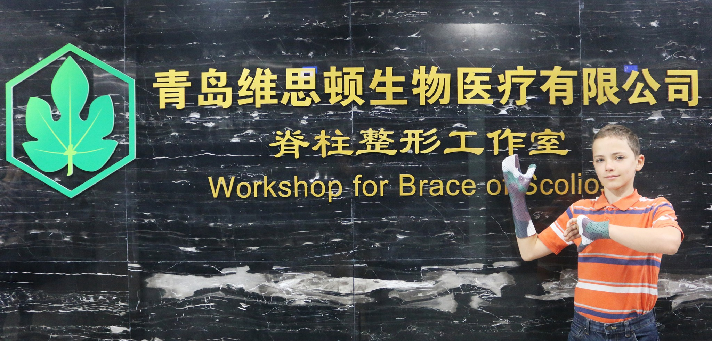

WSD
青岛维思顿智能新材料有限公司
网站首页
关于我们▼
产品介绍▼
案例中心
脊柱健康
新闻中心
联系我们
企业概况
团队介绍
石油工具密封组建
3D打印光敏树脂
企业概况
➡
关于我们
➡
团队介绍
当前网站：
网站首页
>
关于我们
公司简介
青岛维思顿智能新材料有限公司位于风景秀丽的海滨城市、帆船之都——青岛。是一家集科研、生产、销售于一体的高新技术企业，拥有二十年以上的国际化材料研究背景的核心技术团队，雄厚的技术开发实力，全方位满足客户需求。自主研发了拥有美国专利技术，系列智能高分子材料，应用于医用高分子夹板，康复矫形支具，石油井下工具，以及仿真人体骨骼等产品。作为国内先进的高分子材料生产企业，青岛维思顿依靠优良的产品性能、稳定的产品质量和优质的服务与国内外众多医疗，学校等机构建立了长期稳固的合作关系，销售网络遍布全球。根据下游客户的应用需求，进行有针对性的应用研发并迅速进行商业化转化。我们始终秉承着以科研创新为发展动力，并以此打造企业的核心竞争力，致力于让每一个客户都能够得到更安全、更可靠的产品。

© 青岛维思顿智能新材料有限公司 鲁ICP备19061956号 青岛高新区锦业路1号蓝贝孵化器研发楼 技术支持：新悦享网络

 扫码关注
扫码关注